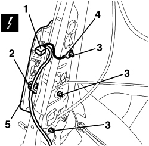

5580C44 FRONT SIDE BAG MODULE (ONE) LH OR RH - R.R
- Path
- Procedures > 55 ELECTRICAL EQUIPMENT > 5580 SPECIAL ACCESSORIES > 5580C AIR BAG SYSTEM > 5580C44 FRONT SIDE BAG MODULE (ONE) LH OR RH - R.R
- Kind
- repair procedure (removal / refitting; the operation number is the code)
- Applies to
- all engines; all production periods
- Interactive page
- https://sloeber94.github.io/elrnDB-aBrrSpdr/en/#/946004057
Applies to: all engines; all production periods
 Removing
Removing
 Refitting
Refitting- Extract the electronic key.
- Disconnect the battery leads and insulate them.
- Wait for 10 minutes before continuing.
Op. 7045A10 FRONT SEAT (ONE), LEFT OR RIGHT - R.R.
Op. 7045A25 FRONT SEAT BACKREST LUMBAR ADJUSTMENT KNOB (ONE), LEFT OR RIGHT - R.R.
Op. 7045D31 FRONT SEAT BACKREST COVER, LEFT OR RIGHT - R.R. WITH SEAT REMOVED
1. Detach the electrical connection.
Description | Component |
|---|---|
DRIVER'S SIDE BAG | |
PASSENGER SIDE BAG |
2. Disconnect the Air Bag wiring retainer.
3. Undo the nuts fixing the Air Bag module.
4. Disconnect the earth lead from the threaded pin.
5. Remove the Air Bag module and support.

Applies to: all engines; all production periods
- Place the Air Bag module in the special cupboard resting it on a free surface with the bag facing upwards.
Applies to: all engines; all production periods
Refitting
Removing- Observe the following precaution.
- If a new module is being fitted, position the labels as described below.
- Remove the detachable part of the adhesive label from the new module. Place a copy of the label in a special folder containing the vehicle details (model, registration date, chassis number) and the serial number of the old module. The file should be kept for future checks.
- Fit the detachable part of the original label on the lower part of the seat, where similar labels for the seat, the backrest cover and the Air Bag wiring can already be found. Beforehand, however, it should be perforated at the month and 14 years after the year in which the module is being fitted (e.g. 2006 for 2020).
- Place the Air Bag module in its housing.
- Connect the earth lead to the threaded pin.
- Tighten the nuts fixing the Air Bag module.
Component | Fastening | dia | Value (daNm) | Validity |
|---|---|---|---|---|
SIDE AIR BAG MODULE | Nut | - | 0.7 ÷ 0.9 |
- Attach the electrical connection.
Op. 7045D31 FRONT SEAT BACKREST COVER, LEFT OR RIGHT - R.R. WITH SEAT REMOVED
Op. 7045A25 FRONT SEAT BACKREST LUMBAR ADJUSTMENT KNOB (ONE), LEFT OR RIGHT - R.R.
Op. 7045A10 FRONT SEAT (ONE), LEFT OR RIGHT - R.R.
- After having refitted the seat, connect the battery and check, using the Examiner, that the system has not acquired any errors during operation.
Topics linked from this page (6)
- 5580C AIR BAG SYSTEM
- 7045A10 FRONT SEAT (ONE), LEFT OR RIGHT - R.R.
- 7045A25 FRONT SEAT BACKREST LUMBAR ADJUSTMENT KNOB (ONE), LEFT OR RIGHT - R.R.
- 7045D31 FRONT SEAT BACKREST COVER, LEFT OR RIGHT - R.R. WITH SEAT REMOVED
- Q030 DRIVER'S SIDE BAG
- Q031 PASSENGER SIDE BAG
Topics that link to this page (8)
- 7045A18 FRONT SEAT BACKREST ASSEMBLY (ONE), LEFT OR RIGHT - R.R.
- 7045A86 FRONT SEAT FRAME (ONE), LEFT OR RIGHT, R.R.
- E7030 AIR BAG - WIRING DIAGRAM
- E7030 AIR BAG - COMPONENT LOCATION
- E7030 AIR BAG - WIRING DIAGRAM
- E7030 AIR BAG - COMPONENT LOCATION
- E7030 AIR BAG - WIRING DIAGRAM
- E7030 AIR BAG - COMPONENT LOCATION